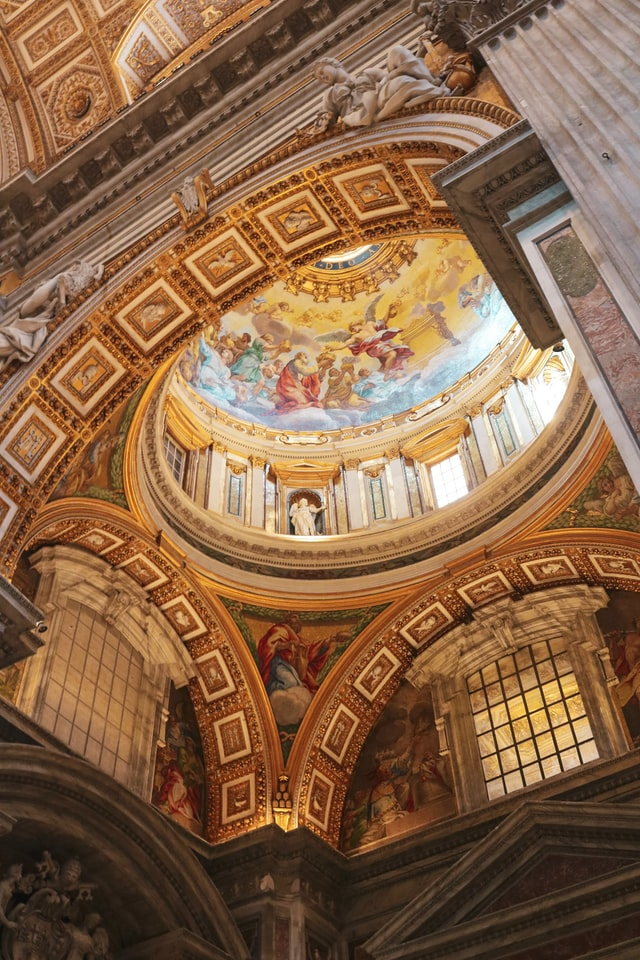
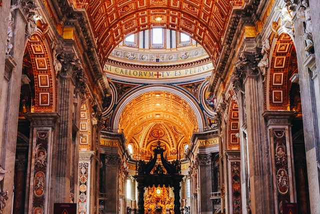
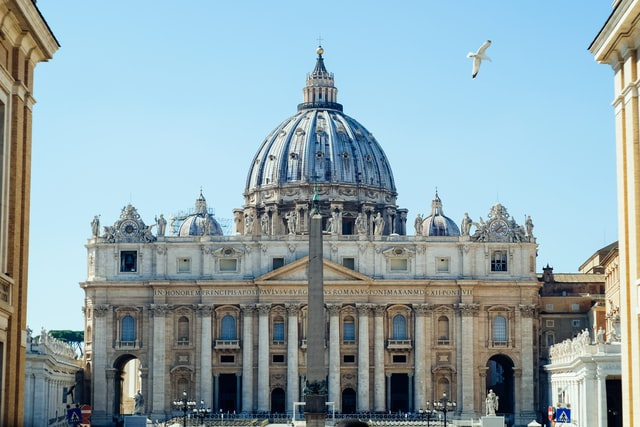
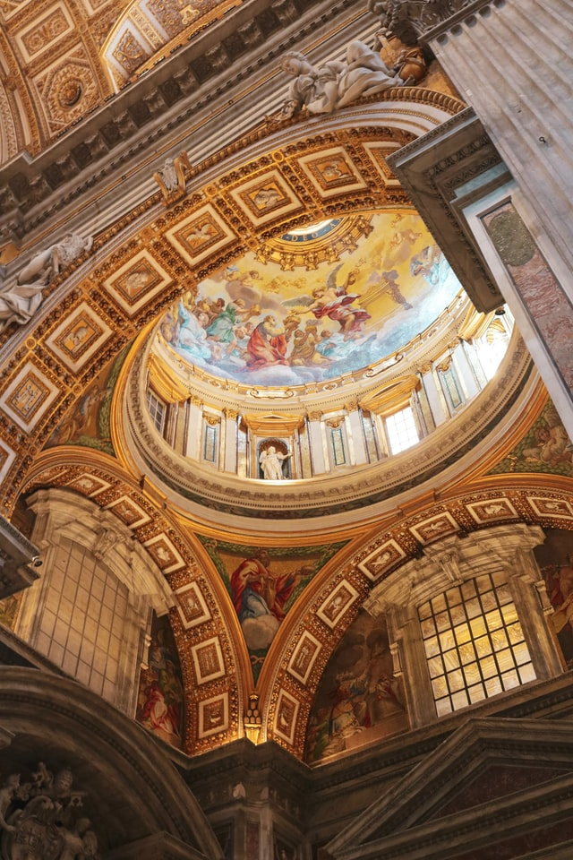
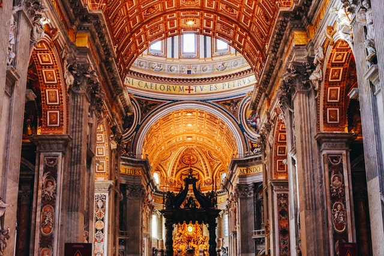
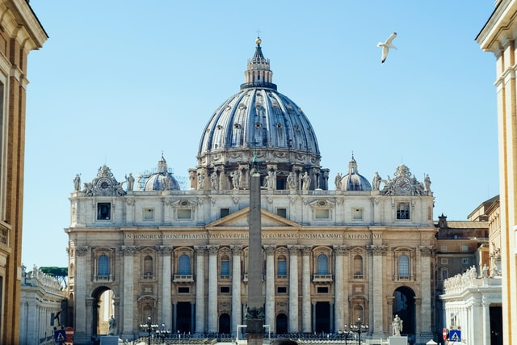

Cinque Terre
Cinque Terre is a coastal area within Liguria, in the northwest of Italy. It lies in the west of La Spezia Province, and comprises five villages: Monterosso al Mare, Vernazza, Corniglia, Manarola, and Riomaggiore. The coastline, the five villages, and the surrounding hillsides are all part of the Cinque Terre National Park, a UNESCO World Heritage Site. The Cinque Terre area is a popular tourist destination. Over the centuries, people have built terraces on the rugged, steep landscape right up to the cliffs that overlook the Ligurian Sea. Paths, trains, and boats connect the villages as cars can only reach them with great difficulty from the outside via narrow and precarious mountain roads.
 




